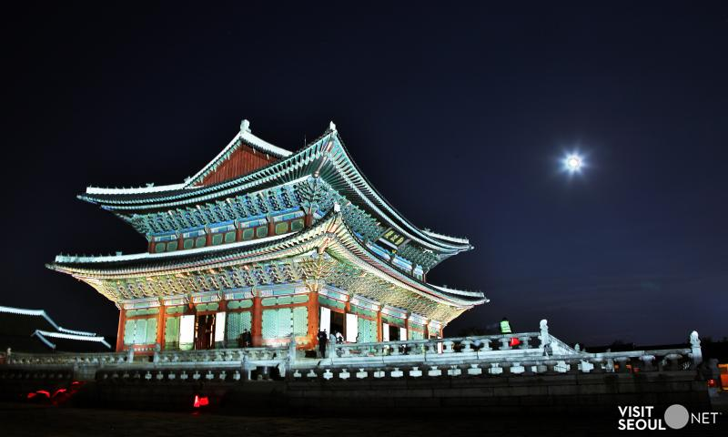

Seoul
At my fourth destination: Seoul, I am especially excited to tour these three places below!
1. Gyeongbokgung Palace- This palace was built during the Joseon Dynasty in 1395! That's roughly 600 years ago! Surprisingly, I don't think I've been to a real ancient Asian structure before. I've only visited buildings that tried to recreate those Asian structures, so this would be a new experience for me, to visit this palace.

2. Myeong-dong- This busy shopping neighborhood in Jung-gu, is a well known commercial area district with multiple outlets, stores, markets, hotels, restaurants, cinemas, historical sites,etc... I would love to go to the Myeongdong Festival and shop through the neon lights of the city at night.
3. N Seoul Tower- The Namsan tower marks the second highest point in Seoul! It's actually a fairly new building, built in 1971, and it provides TV and radio broadcasting in Seoul. Aside from that, there is a terrace, food court, garden, shop, cafe, observatory, pond, a revolving restaurant, the "Sky Restroom", and many more. Isn't that awesome? And on top of everything, it is well known for the Namsan cable car that takes visitors up to the top of the tower where they can enjoy a panoramic view of the city below!